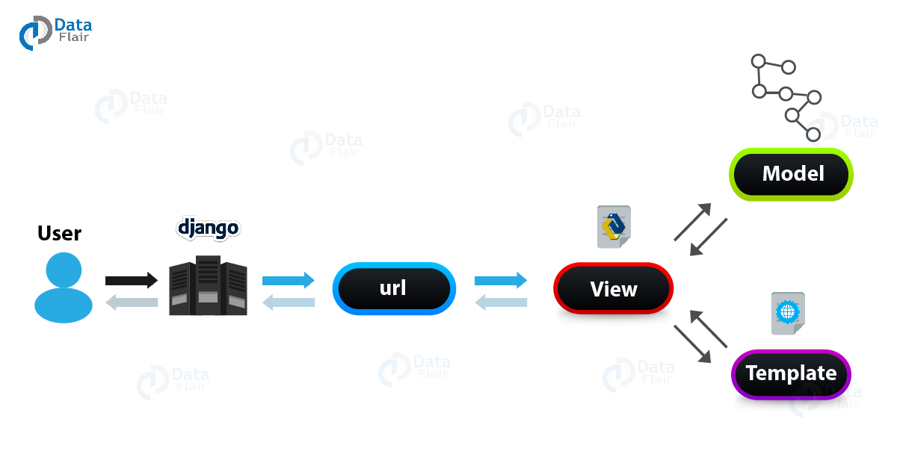

Here is the Divide and Conquer example incliding merge sort. The following is the pseudocode for merge sort which is taken from the book Introduction to Algorithms, CLRS
MERGE(A,p,q,r)
n1 = q - p + 1
n2 = r - q
let L[1..n1 + 1] and R[1..n2 + 1] be new arrays
for i = 1 to n1
L[i] = A[p + i - 1]
for j = 1 to n2
R[j] = A[q + j]
L[n1 + 1] = infinity
R[n1 + 1] = infinity
i = 1
j = 1
for k = p to r
if L[i] <= R[j]
A[k] = L[i]
i = i + 1
else
A[k] = R[j]
j = j + 1
MERGE-SORT(A,p,r)
if p < r
q = floor((p + r)/2)
MERGE-SORT(A,p,q)
MERGE-SORT(A,q + 1,r)
MERGE(A,p,q,r)
So I started to do test driven development. This is one of the most important and crucial things considered in software development. At first glance test driven development seems counter productive because you think you can write actuall code in the time you write tests but it helps programmers to stay inside the project scope. In test driven development, you first write the tests that you want your code to pass and then you proceed to write the actuall code.
I saw a painting on Pinterest and I thought I should draw this to get the rust off. It took me 1 hour to complete this.
A simple library app which is RESTful and also uses Celery to take care of the asynchronous tasks.The code is available here. I used Serializers, Generic views, API views, Viewsets and Routers which are the basic building blocks of RESTful design in Django.
In order to practice making asynchronous tasks with Django, I made a simple app which sends an email to the specified email ids. This task is run seperately by Celery using Redis as a broker and is deployed on Heroku. The functionality of this app would be incorporated with the BookCenter app.
In production environment the tasks that take longer to execute are supposed to run seperately so that we can achieve maximum throughput on requests and responses. For Django with Celery. Celery is a task queue which helps us run longer running code asynchronously. It used Redis or RabbitMQ as the task broker. I used Celery to send an email from the backend because sending an email is also a time consuming task so we delegate it to Celery. I made it work quickly in my local environment but it was giving me trouble in production. I was deploying my app to Heroku and Celery wasn't executong properly.
I started making RESTful APIs and I use Django Rest Framework for that. One can make a rest api in plan Django but that would require a lot of effort and DRF provied other features which plane Django does not. DRF work on top of Django. Django treats it as another installed app. DRF provides Serializers, Routers to do the basic restful stuff. I still have to learn a lot about this framework but I think I am getting a hang of it.
I had never deployed a website before so my first deployment platform is Heroku. I found many things of ease and struggled with many other things. I noticed one thing is that heroku allocates resources which usually are provided by AWS for example the Redis cache I used for asynchronouus tasks was actually an amazon ec2 instance and it turned out the Heroku is hosted on AWS.
Heroku uses the concept of dynos.
Django is a Python framework used for web development. I picked up Django framework in ending 2018. In 2019 I didn't do anything with it. However I picked it up again this year. I think now I have a better understanding of the whole framework. In production however, people do not use Django templates for the front end. They instead make RESTful APIs which then could communicate with any outter source. Django has components like Models, Views, Templates and URLs.
I have only used Django for development so I do not have anything to compare it to. Django is a giant framework i.e. it does a lot of heavy lifting for you. At first it made me a little uncomfortable but now I think I have a better understanding of it. I will keep using Django and getting better at it because my current job requires for me to work in it.